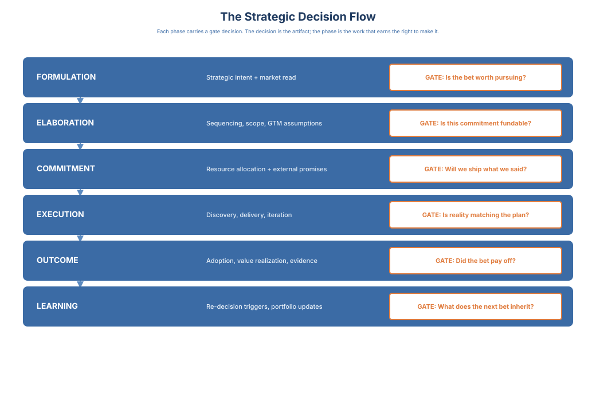

Vision to Value · 4 / 16
Chapter 2: The Strategic Process and Operational Focus Areas
Product strategy is not a planning artifact you write once; this chapter shows how it becomes a continuous system of leadership decisions. World-class organizations win because they build three things into the decision system itself: quality, repeatability, and durability. That means decisions made at the right level, with the right inputs, with clear accountability, repeatedly, over time.
How Product Leadership Decisions Work Across Levels
As product organizations grow, leadership shifts from making individual decisions to designing a decision system that works across teams, domains, and functions. When this system is unclear, organizations either slow to a crawl or fragment into local optimizations. The decision flow this chapter maps operates across the three altitudes the Introduction named. A category bet is a Tier 1 decision; the quarterly re-decision on a roadmap commitment is Tier 2; the launch-readiness call on a shipped increment is Tier 3. The flow works when each decision is made in its own room, and fails when a Tier 1 question arrives at a Tier 3 forum or a Tier 3 tradeoff absorbs a Tier 2 quorum.
Decisions Exist at Multiple Levels - and Must Stay There
At minimum, product organizations operate across three decision layers:
- Organizational and strategic decisions: where to play, what constitutes success, and which bets deserve sustained investment
- Portfolio and domain decisions: sequencing, investment balance, and tradeoffs across problem spaces or product lines
- Team-level execution decisions: how work is explored, delivered, and iterated within a defined scope
At team level, these decisions are recognizable: how deep to frame a problem before scoping, what counts as a success criterion in the PRD, how to sequence inside a committed theme, which items slip when the date is fixed and scope is variable, and what "done" means as an outcome commitment.
Individually small, collectively they are the foundation the strategic and portfolio decisions run on. Read from the Director altitude, team-level execution decisions are where product practice lives: scope tradeoffs inside a committed theme, GTM sign-off, discovery depth, backlog prioritization, and the call to re-scope rather than re-commit when evidence shifts. These are how a team either compounds the system or quietly erodes it.
Failure modes are predictable:
- Leaders make team-level execution calls
- Teams make portfolio-level bets without authority
- No one owns cross-domain tradeoffs
Vignette (continued): Three months after Orion went GA, the exec staff reopened the decision. CRO, CPO, and VP CS each carried a different story of what "ready" had meant. No one could pull the original decision record. Assumptions had lived in hallway conversations, not in a decision artifact, so the org re-litigated scope, pricing, and positioning from scratch. Learning reset instead of compounding. A one-page Orion Decision Record would have made this a calibration, not a restart. In its absence, re-decision felt like blame.
Execution looks busy; decision quality degrades. The product leader's job is to preserve the integrity of these levels: decisions live where context, accountability, and learning velocity are highest.
Contribution Beats Symmetry
End-to-end product organizations depend on tight leadership partnership across disciplines, each contributing non-negotiable input:
- Value leadership integrates customer value, business outcomes, and prioritization
- Platform leadership ensures feasibility, system integrity, and delivery sustainability
- Design leadership safeguards experience coherence and usability
- Go-to-market leadership grounds decisions in adoption, pricing, and revenue realities
- Ecosystem and partnership leadership shapes what the product becomes by bringing partner, channel, and platform intent into Formulation - not as a downstream commercial motion, but as a pre-commitment input to the strategy itself
The common mistake is equating contribution with shared responsibility without explicit decision ownership. When everyone owns a decision, no one is accountable for its outcome. High-performing leadership teams are explicit about who decides, who contributes, and which constraints apply.
Leadership Teams Decide How Decisions Are Made
Senior leadership leverage comes from deciding which decisions are reversible vs irreversible, what evidence is required before deciding, where escalation is appropriate, and how outcomes will be measured. This meta-decision layer enables speed with confidence; without it, teams hesitate or escalate unnecessarily.
A note on the CPO-board interface. At scale, the decision-flow model translates directly into the narrative a CPO owes the board. Portfolio-level bets, not features. Commitment log, not release dates. Outcome reviews, not status. A board briefing that lists what shipped is a product update. A board briefing that lists what the organization decided, what it committed to, what the outcomes said, and what was re-decided as a result is a product-leadership update. The second version is the one that earns the CPO a strategic seat at that table.
The Strategic Process as a Decision Flow

The journey from vision to value unfolds through three interconnected decision phases: Strategy Formulation, Strategy Elaboration, and Strategy Execution. Each is a distinct class of leadership decisions, and each answers a different question:
- Formulation: What bets are worth making?
- Elaboration: What are we committing to, and under what constraints?
- Execution: Are outcomes validating our decisions?
When organizations struggle, it is because one of these questions is skipped or blurred.
Strategy Formulation: Choosing the Right Bets
A strategic bet is a decision to pursue a specific outcome in a specific market under a specific hypothesis, with sustained investment and an explicit re-decision trigger. A bet is larger than a feature and more durable than a roadmap item. It carries a named accountable owner, a success definition tied to outcomes (not output), a resource envelope, and a decision rule for when to continue, revise, or stop. The minimum unit of formulation is the bet, not the initiative.
Every strategic bet has a make-or-buy-or-partner decision inside it. Formulation is not only "what problem do we solve" but "how do we source the capability to solve it." Build, acquire, license, partner, or channel: each path has different cost of capital, time-to-value, roadmap control, customer ownership, and long-run margin. Treating make-vs-buy-vs-partner as a downstream sales or corp-dev topic is how scaled organizations commit to the right problem with the wrong sourcing strategy. Name it as a first-class Formulation output: what we will build, buy, or partner for, and what the re-decision trigger is if the partnership or acquisition underperforms. Business Development owns this decision surface inside Formulation. The Product Leadership Team (PLT) closes it jointly with Corporate Development and the CRO, with Business Development holding the pen on the partnership architecture.
At scale, formulation is also a capital-allocation decision. A portfolio of strategic bets is an allocation of finite organizational capital: people, attention, market position, and time. Every bet carries an implicit continuation threshold: the evidence it must produce to earn its next increment of investment. Naming that threshold in advance is the product-organization equivalent of a hurdle rate; re-decision triggers are the organizational form of a stage gate. Formulation that does not name the threshold produces bets the organization cannot honestly stop.
Formulation never happens in a vacuum. External inputs are non-negotiable: the competitor landscape, the substitutes the buyer actually considers, the category context (defined, creating, or dissolving?), the pricing benchmarks that set the reference frame, and the market-timing window. Without these, Formulation optimizes against an internal view while the external frame moves underneath it. Posture matters: a fast-follower bet and a category-creation bet require different evidence, timing, and learning loops. Name which one you are running before you commit.
Taken together, formulation defines where the organization will compete and which problems justify sustained investment. Strong formulation integrates customer insight, market dynamics, and business intent - and makes opportunity cost explicit.
The Business-Case / Continuation-Threshold shell that hardens a bet from formulation into a committed portfolio record is specified in Appendix B (see TOC entry: Appendix B → Business-Case / Continuation-Threshold Template).
When formulation is weak, downstream execution optimizes locally against unstable direction.
Strategy Elaboration: Turning Bets into Commitments
Elaboration translates strategic bets into explicit commitments.
In this book, a commitment is a decision that has been hardened through sequencing, funding, go-to-market alignment, or external promises-such that changing it requires a conscious re-decision, not quiet drift.
Examples of commitments include:
- A roadmap item that drives staffing or hiring decisions
- A sales or customer promise that constrains future sequencing
Vignette: Commitment Drift in the Wild Sales promised a key customer that onboarding improvements would ship "by end of quarter." The roadmap reflected the work, but no success criteria were defined. Engineering delivered changes on time. The customer adopted partially, churn risk remained, and support load increased. At the next planning cycle, the item was marked "done." No one re-opened the decision. The promise quietly degraded from a commitment to an artifact of delivery. The organization did not fail to execute. It failed to re-decide.
Commitment drift (how commitments quietly degrade):
- Vague: "Improve onboarding" becomes "ship onboarding work" with no metric, no guardrails, and no re-decision trigger.
- Politically negotiated: commitments become compromise bundles ("everyone gets something") that no one can own or measure.
- Decoupled from outcomes: delivery date becomes the only truth; adoption misses are reinterpreted as "execution issues" instead of decision flaws.
- Decoupled from market context: the bet is held even after the competitive or category frame that justified it has shifted - a new entrant, a substitute, a pricing move, or a category redefinition. The commitment is defended as discipline, when in fact it is inertia.
Commitment drift traces back to discovery quality: a shallowly framed problem cannot produce a commitment with crisp success criteria. It often begins inside the requirements document itself: success criteria written as deliverables rather than outcomes are commitment drift in seed form. The Director-owned standard for a commitment-grade PRD is a decision-system input, not a style guide. A commitment without instrumentation is a commitment without a learning loop: what will be measured, when, and by whom belongs in the commitment itself, and its absence is a drift signal equal to a missing success criterion.
Commitment Drift in Action: A leader announces: "We're focusing on enterprise readiness this quarter." Teams interpret it as security and compliance work. PMM interprets it as messaging and positioning. Sales interprets it as discount flexibility and deal support.
Three months later, everyone reports "alignment" but outcomes are incoherent. Each function optimized for their interpretation. No one owned the decision.
The fix: a commitment hardening step before execution begins. The leader writes a one-page decision record: what "enterprise readiness" means as a measurable outcome, which constraints apply, who owns the decision, and what success looks like at 30/60/90 days. Interpretation becomes alignment.
Read from the Product Marketing seat, "messaging and positioning" is the discipline without which Sales and Product interpret the prompt at a whiteboard the night before a board meeting. The one-page decision record lets a Product Marketing leader stop interpreting and start deciding; it converts "everyone knows what we mean" into a record a new hire can read on their second day.
A specific commitment worth singling out: pricing and packaging. In most scaled organizations, pricing and packaging are where commitment drift becomes visible earliest - four functions each own part of the decision (Product, Product Marketing, Finance, Sales), and when no one is accountable for the integrated call, the price is set by the loudest voice in the last quarterly meeting. The interface design that fixes this - who is accountable, who is a required input, and how the decision is re-opened - appears in Chapter 3.
How commitments behave differently by context:
- Platform bets: commitments harden around interfaces, SLAs, migration paths, and enablement of other teams (not "features"). Learning cycles are longer; ambiguity must be explicitly bounded.
- Enterprise customer commitments: commitments become external promises with legal/revenue consequences; escalation rules and explicit "no" decisions must exist early.
- Regulated environments: commitments include auditability, compliance evidence, and approval gates; definition of done must include regulatory acceptance, not just shipping.
Elaboration reconciles discovery hypotheses, sequencing, roadmap intent, and go-to-market assumptions into a coherent plan.
Elaboration is about clarifying tradeoffs, not detailing tasks. Teams should understand not only what they are doing, but why, in what order, and under which constraints.
Strategy Execution: Delivering - and Learning - from Decisions
Execution is where strategy becomes visible - and where decision breakdowns are most costly. Failures rarely stem from lack of effort. They arise from unclear escalation rules, leaders re-entering execution, or teams making portfolio tradeoffs without authority.
Leadership discipline during execution is about preserving clarity, not controlling activity.
MVPs as Leadership Risk Management
At scale, MVPs are not delivery shortcuts. They are risk-reduction decisions. A well-formed MVP answers a specific uncertainty before committing further resources. Used poorly, MVPs create motion without learning.
Expanding Operational Focus as Organizations Mature
As product organizations scale, leadership attention must expand. Sustainable value requires balanced focus across four operational domains:
- Product Value - are we investing in outcomes that materially matter to customers?
- Technology - are we building systems that support speed and learning over time?
- Go-to-market - are positioning, pricing, and adoption shaping product decisions early?
- Customers - are we learning from real usage, not proxies, and are customers reaching the value we promised at the rate we expected? (The first question is research. The second is value realization. Both must be answered.)
For companies whose strategy depends on external leverage - platform, marketplace, API-first, OEM-embedded, regulated-industry, or channel-led - a fifth domain is non-optional:
- Ecosystem - are partner, channel, and platform decisions shaping product intent early, and are the external dependencies on which our value depends being observed, governed, and re-decided when they drift?
Outcome horizons at scale. "Outcome" is not a single point in time. Mature organizations measure it across three horizons:
- Leading (T+2 weeks): activation, first-value events, immediate usage. Owned at team level.
- Mid (T+6 weeks): adoption depth, time-to-value, expansion of use cases. Owned by product and value realization.
- Lagging (T+12 weeks+): retention, NRR/GRR, health trajectory, expansion revenue. Owned at product line and portfolio level.
A product can hit leading indicators and fail lagging ones. That is the gap the post-launch decision system must close. Using "outcome" without a horizon means optimizing for the one measured fastest, not the one that compounds value. Leadership blind spots in any one of these areas are where strong teams fail to scale impact.
What This Looks Like at Scale
Early-stage teams rely on individual heroics. Mature organizations rely on explicit ownership, specialization, and integration:
- Feature and value PMs
- Platform or technical PMs
- Product marketing and go-to-market leadership
- Customer success and value realization roles
- Product operations as a force multiplier
The goal is not bureaucracy - it is depth, clarity, and learning velocity.
How Portfolio Decisions Sequence Strategic Bets
Portfolio management is not an approval ritual. It is the mechanism for deciding which bets to fund against shared scarcity: capital, engineering capacity, senior attention, and customer patience. At the VP altitude, most real portfolio work is sequencing, not selection. The question is rarely "is this bet worth making" but "which of these three bets goes first, given we cannot fund all simultaneously without degrading each."
Sequencing works when three constraints are explicit:
- Capital: the funded-investment envelope for the planning window, declared in advance.
- Capacity: the engineering, design, and go-to-market throughput actually available, not nominal headcount.
- Attention: the number of hard decisions the PLT can hold in working memory before decisions decay into neglect.
Against those constraints, bets are sequenced on four dimensions: strategic coherence (does this bet compound with the prior one?), reversibility (if wrong, how fast and cheap is the unwind?), dependency (does it unlock or block others?), and learning payoff (does running it earlier produce evidence that sharpens subsequent bets?).
The output is not a priority list. It is a commitment sequence with explicit stop/continue/re-scope triggers for each bet. When teams know which bet is committed, which is staged, which is deferred, and the evidence that would promote or demote any of them, the portfolio becomes a tradeoff engine that reduces thrash instead of producing it.
Reversibility test (in one line): If this decision proves wrong, how long does it take to unwind, and what does the unwinding cost? Bets with fast, cheap unwinds should be delegated and timeboxed. Bets with slow, expensive unwinds earn the full commitment-hardening treatment described in Chapter 2's Elaboration phase.
See Appendix B for the Business-Case and Continuation-Threshold template that instantiates portfolio sequencing as a record.
Tech-Debt Economics
Technical debt surfaces at the executive altitude in two shapes, and distinguishing them is the work. Servicing debt is the cost of running the portfolio under the current debt load, measured in velocity tax, reliability tax, and feature-delivery tax. Servicing debt is an operating cost that reads against the CFO's margin floor and the CTO-CPO velocity floor. Retirement debt is the cost of paying down a specific debt class to remove it from the servicing base. Retirement is a capital decision that reads against the continuation-threshold math governing any strategic bet.
The failure mode is treating retirement debt as a servicing conversation. Engineering surfaces a platform-migration ask as "we have too much debt to keep running"; Product routes it through the platform cadence as a margin conversation; the CFO reads it as operating-cost inflation rather than capital allocation; the answer converges on partial retirement that does not remove the debt from the servicing base. Twelve months later, the cost has compounded and the ask returns, larger.
The correction is to frame retirement debt as a strategic bet subject to continuation-threshold discipline. The bet has a capital envelope ([your number] against the migration), a continuation threshold (servicing-cost reduction of [your number] per unit of traffic by Q[your number]), re-decision triggers (threshold failure, market shift, complexity exceeding envelope), and auditable-by owners (CFO for capital integrity, CTO for architectural, CPO for portfolio-fit). Running cost is a Tier 2 conversation. Retirement debt is a Tier 1 conversation disguised as Tier 2. The Engineering Charter in Appendix C is where architectural-debt retirement sequencing sits as a standing decision surface at the CPO-CTO interface.
Make, Buy, or Partner
The make-buy-partner decision fails most often because the three options are not evaluated against the same field. Make is evaluated on engineering velocity and architectural control; buy on vendor economics and integration cost; partner on strategic alignment and channel economics. Each is defensible in isolation; together they produce a comparison where every option wins on the field its advocates chose, and the decision converges on the loudest advocate.
The correction is one field applied to all three: total cost of ownership over three years, measured against the strategic bet the capability serves. Three-year because shorter horizons bias toward buy (integration cost amortizes slowly) and longer horizons bias toward make (architectural control compounds). Strategic-bet-weighted because the capability's value depends on which bet it enables.
Make: engineering cost across three years (headcount, opportunity cost, debt contribution) plus the value of control (architectural flexibility, data ownership, interface discipline). Useful for core capabilities with long horizons; poor fit when engineering capacity is the binding constraint.
Buy: vendor contract cost (license, implementation, integration, switching) plus lock-in cost (data portability, renegotiation, vendor-dependency risk). Useful when commodity-class and the vendor market is mature; poor fit when the capability is differentiating or lock-in exceeds speed-to-market value.
Partner: partnership economics (co-sell cost, revenue share, MDF, channel friction) plus strategic value of joint positioning. Useful when the partner's installed base is faster to reach than direct; poor fit when economics compound against margin or joint positioning creates a category ceiling.
The CPO-CTO interface owns the make side; the CPO-CFO interface owns the buy side; the CPO-CRO and CPO-Business Development joint surface (per Principle 5 negotiated economics) owns the partner side. Principle 5 — Go-to-market Is a Strategic Choice, Not a Handoff — establishes that GTM is not one decision but a set of decisions across positioning, pricing, motion, channel, and partnership economics, each with named owners; pricing and partnership economics in particular are co-decisions, not Sales-or-Finance ratifications of a Product call. The principle is revisited in full in Chapter 8; what matters here is that the partner-side TCO read is a joint-decision artifact, not a Business-Development handoff. Three reads on the same capability against the same field. The CPO's work is synthesis, not advocacy. A capability that costs [your number] to make, [your number] to buy, and [your number] to partner for is not three options at three prices; it is three bets at three strategic shapes. The charter discipline makes the advocate's bias visible in the evidence record, so the best TCO-to-bet fit wins, not the loudest voice. The Engineering and Business Development Charter templates in Appendix C carry the make-side and partner-side reads respectively as standing surfaces that stay live between decisions.
Raising the Ceiling: Decision Systems at Scale
In high-performing organizations, strategy is continuously refined through execution feedback rather than frozen at formulation. Leadership teams treat decisions as hypotheses under test, not declarations of certainty. What differentiates market-leading organizations is superior decision capabilities, not superior foresight: clear ownership, explicit tradeoffs, and fast feedback into leadership judgment. This is how product organizations evolve from delivery engines into strategic intelligence systems.
The Emotional Cost. The first time I slowed a bet I had already publicly committed to — in a quarter where speed was how the company measured authority — I learned what this chapter actually costs. The threshold math was right. The decision was right. The champion of the bet stopped meeting my eye in the hallway for about a month, and the political capital it took two cycles to replenish. The work was not optional. What saved the call was not the math, but the record of why we slowed down — written, dated, in my own hand. Two years later, when the next CPO faced the same shape of decision, that page meant they did not have to face it alone.
The strategic-bet lifecycle can absorb the agent the same way it absorbs any other input. Agents can draft the bet, propose the assumption ledger, and watch outcome evidence against named re-decision triggers. They can do this continuously and at lower cost than the leader can. None of it changes who closes the bet. The Charter requires a named human seat on every formulate, harden, and stop event, and the Call-attribution field on the record is the falsifiable surface that says so. A bet whose closure event names an agent has no defensible closure. A leader who accepts an agent-drafted record without rewriting a single assumption has not run the strategic process.
Vision to Value Toolkit (Chapter 2)
Designing the Strategic Decision System
Purpose: assess and improve how strategy moves from intent to outcomes across a growing organization. This toolkit focuses on decision flow, operational balance, and leadership discipline at scale, not planning artifacts.
Strategic Decision Flow Audit Pick one major product initiative from the past 6-12 months.
For each phase, answer honestly:
Formulation
- Was the strategic bet explicit?
- Were opportunity costs clearly acknowledged?
- Was success defined in business and customer terms?
Elaboration
- Were tradeoffs surfaced before execution began?
- Were sequencing and constraints made explicit?
- Were go-to-market assumptions validated or assumed?
Execution
- Were teams empowered to decide within clear boundaries?
- Were escalation rules understood?
- Did leadership protect focus once execution started?
Signal of maturity: Teams can explain how the initiative evolved across phases without reinterpreting intent.
Decision Level Integrity Check Map recent decisions to their proper level:
- Strategy level: where to play, which bets matter
- Portfolio or domain level: sequencing and investment tradeoffs
- Team-level: discovery, delivery, iteration
Then ask:
- Which decisions were made at the wrong level?
- Where did leaders step too far down?
- Where did teams make tradeoffs without authority?
Design insight:
Decision failure is a placement problem, not a capability problem.
Multi-Profession Contribution Map For a recent strategic decision, list inputs from:
- Product leadership
- Engineering leadership
- Design leadership
- Go-to-market leadership
- Customer or post-launch roles
Then assess:
- Were contributions explicit or implicit?
- Was decision ownership clear?
- Did contribution get confused with shared accountability?
World-class teams separate who contributes from who decides.
Strategy Elaboration Stress Test Review your current roadmap or plan.
Ask:
- Which assumptions are we betting on?
- Which risks are untested?
- What would force us to revisit this plan?
If answers are vague, elaboration was compressed or skipped.
Strong elaboration clarifies constraints and tradeoffs before execution absorbs them.
Operational Focus Balance Scan Rate your organization (1-5) on each domain:
- Product Value
- Product Technology
- Go-to-market
- Customer Focus
Then ask:
- Which area consistently receives leadership attention?
- Which area is assumed to take care of itself?
- Where do failures repeat?
Blind spots, not effort, explain scaling breakdowns.
Execution Discipline Review For active initiatives, reflect:
- Are leaders re-entering team-level decisions?
- Are teams escalating unnecessarily?
- Are priorities changing mid-stream without explicit re-decision?
Execution failure signals unclear decision design upstream.
MVP Intent Check For recent MVPs or pilots, ask:
- What uncertainty was this meant to reduce?
- What decision depended on its outcome?
- Did learning change direction or merely justify continuation?
An MVP without a decision attached is activity, not learning.
Leadership Escalation Design List decisions that are:
- Routinely escalated
- Frequently revisited
- Politically sensitive
For each, ask:
- Is escalation intentional or default?
- Is information missing or authority unclear?
- Is accountability avoided?
Good leaders design escalation paths so they are rarely needed.
Decision System Diagnostic
For the seated CPO and the VP Product on the line to that seat: this diagnostic asks the question Chapter 1 is built around — is your organization a decision system, or a delivery function with a product label on it? Answer each item as the organization actually operates, not as the org chart claims.
Score each item 0 (not at all), 1 (sometimes), or 2 (consistently):
- Strategic bets carry a written continuation threshold the PLT can read out loud without opening a deck.
- Decisions are recorded as decisions, not as meeting notes, with a named accountable owner and a re-decision trigger.
- The portfolio review can adjourn with a stop, continue, or renew call against evidence — not a re-confirmation of last quarter.
- Sensor inputs (market read, customer-outcome read, business sensor read) gate the decision, not accompany it.
- When a launch misses, the post-mortem names the decision the organization made, not the function that fell short.
- A new PM hired this quarter could find any decision from the last twelve months in under thirty seconds, by description.
Score interpretation (against the four Vision to Value maturity levels):
- 0–3 (Enabling): you have a delivery function. The decisions exist; the system does not. Chapter 4 is the first read.
- 4–6 (Established): you have a decision system in pockets. Some functions hold the discipline; others run on relationship and memory. Chapter 5 names the seams that fail first.
- 7–9 (Company Leading): you have a decision system that produces consistent calls at scale. The next move is observability on the system itself — Chapter 8 Principle 6.
- 10–12 (Market Leading): you have a decision system the rest of the company can read, audit, and trust. The work is preserving it under leadership transitions.
The score is not a destination; it is the read against which next quarter's installation work is sized.
What you will likely find: on the Strategy Elaboration Stress Test, the answer to "which assumptions are we betting on" is a list of priorities, not a list of assumptions. Those are not the same thing. Priorities are what the organization has decided to work on. Assumptions are the specific beliefs that would have to hold for the work to produce the outcome. When the list of assumptions is missing, the re-decision trigger in the next quarterly review is also missing, because there is nothing named in writing that can be invalidated by evidence. You are not running a portfolio. You are running a to-do list the portfolio forum reviews.